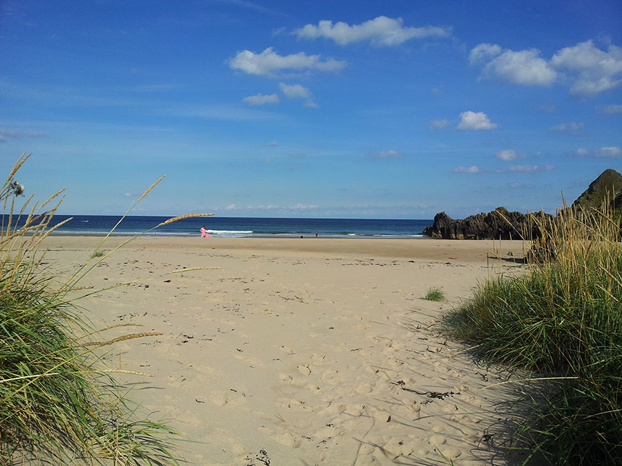

Welcome to Cullen Community & Residential Centre
We provide a range of indoor and outdoor facilities for community groups, activities & social events, as well as affordable group accommodation for our visitors to Cullen

The town of Cullen is a fantastic family holiday destination and great place to live, with many things to see and do within easy walking distance, right on our own doorstep. From relaxing on our pristine award winning beaches, to a whole variety of adventure activities.
Cullen also provides a convenient base location from which to spend the odd day out off exploring further afield across Scotland's North East and Highlands, all within easy driving distance.
Cullen Community & Residential Centre specialises in providing affordable accommodation for groups of visitors. In the past we've accommodated many different visitor groups, such as for school trips, scouts, guides & brownies, company team building, geologists on field trips exploring the interesting geology of the area, as well as various groups from oversees, and many others, often returning to visit Cullen year after year.
Feel free to take a wander through our website and get a feel for what Cullen and our Community Centre have to offer you.


Our Charitable AimsTogether for the common good of Cullen
Our aims are to provide recreational facilities at Cullen Community Centre for the benefit of all members of the public, with priority given to the community. They also include the general advancement of community development in Cullen.

Community DevelopmentSupporting the needs of the community
Good community development is action that helps us to recognise and develop our own local abilities and potential, and to organise ourselves to respond to the problems and needs which we all share.
- to create wealth and give everyone access to its benefits
- to care for all its members, when they need it, throughout their life span
- to provide an environment that is safe and attractive
- to enable people to express and celebrate their creativity and diverse cultures
- to enable everyone to participate in decisions that affect their lives
Three Kings Cullen AssociationHow we came about
The centre is run by a local charity called The Three Kings Cullen Association, which is directed by a team of local volunteers. In 2017, the local authority announced that it was going to close the Cullen CRC by June 2018 with a view to demolishing the building in 2019 unless the people of Cullen took on the building as a 'Community Asset Transfer' (CAT). A community meeting, attended by around 100 people, was held in the Cullen Town Hall where it became clear that the will of the people of Cullen was to keep the centre open.